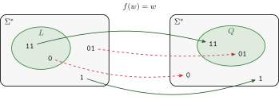
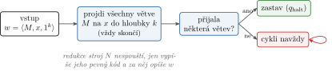

5.4 Úlohy navíc¶
Úlohy procvičují definici polynomiální redukce a její vlastnosti (oddíl 5.1), NP-těžkost a NP-úplnost (oddíl 5.2) a první redukce z problému \(\prob{UNP}\) (oddíl 5.2.1). Kromě \(\prob{UNP}\) se v nich používá jen problém zastavení z kapitoly 2.
Neoficiální úlohy
Úlohy v tomto oddílu nejsou oficiální zadání předmětu. Jsou to procvičovací úlohy navíc k látce kapitoly; kandidátní funkce z úlohy 5.1 byly prověřeny programem na všech slovech délky nejvýše 12, tvrzení (a), (b) a (f) z úlohy 5.3 na všech jazycích a funkcích nad čtyřprvkovou množinou, čísla z úlohy 5.2 přepočítána a redukce z úloh 5.6 a 5.7 ověřeny simulací 4000 náhodných malých nedeterministických strojů; ostatní části jsou důkazy přepočítané ručně.
5.4.1 Rozcvička¶
Úloha 5.1 (je to redukce?)
Pro každou trojici rozhodněte, zda je funkce \(f\) polynomiální redukcí \(L\redp Q\) (definice 5.1). Ověřte obě podmínky definice; pokud některá neplatí, uveďte protipříklad. Všechny jazyky jsou nad abecedou \(\{0,1\}\), \(\#_1(w)\) je počet jedniček ve slově \(w\) a \(N(w)\) je číslo, které slovo \(w\) zapisuje binárně (\(N(\varepsilon)=0\), úvodní nuly jsou dovolené).
- \(L=\{w\mid \#_1(w)\text{ je sudé}\}\), \(Q=\{1^m\mid m\text{ je sudé}\}\), \(f(w)=1^{\#_1(w)}\).
- \(L=\{w\mid N(w)\text{ je sudé}\}\), \(Q=\{1^m\mid m\text{ je sudé}\}\), \(f(w)=1^{N(w)}\).
- \(L=\{w\mid \#_1(w)\text{ je sudé}\}\), \(Q=\{w\mid |w|\text{ je sudé}\}\), \(f(w)=w\).
- \(L=\{w\mid \#_1(w)\text{ je sudé}\}\), \(Q=\{00\}\), \(f(w)=00\) pro \(\#_1(w)\) sudé a \(f(w)=1\) jinak.
Řešení
Kontrolujeme dvě věci: (1) \(f\) je spočitatelná deterministickým TS v polynomiálním čase, (2) pro každé \(w\) platí \(w\in L\iff f(w)\in Q\).
(a) Ano. (1) Stroj projde vstup jednou zleva doprava a za každou přečtenou jedničku zapíše na výstup jednu jedničku: \(O(n)\) kroků, \(|f(w)|=\#_1(w)\le n\). (2) \(f(w)=1^{\#_1(w)}\in Q\iff \#_1(w)\) je sudé \(\iff w\in L\). Řetěz ekvivalencí dává oba směry naráz.
(b) Ne. Podmínka (2) platí: \(f(w)\in Q\iff N(w)\) je sudé \(\iff w\in L\). Neplatí ale podmínka (1): výstup má délku \(N(w)\) a pro \(w=1^n\) je \(N(w)=2^n-1\). Stroj zapíše za jeden krok nejvýše jeden symbol, takže jen vypsání \(f(w)\) trvá aspoň \(2^n-1\) kroků – exponenciálně vzhledem k \(n=|w|\). (Pro \(|w|=12\) je to až \(4095\) symbolů.) Pozor: otázka zní, zda je redukcí tato \(f\). Samotné \(L\redp Q\) platí, jen jinou funkcí, např. \(g(w)=\varepsilon\) (\(=1^0\in Q\)) pro \(w=\varepsilon\) nebo \(w\) končící nulou a \(g(w)=1\) jinak.
(c) Ne. Podmínka (1) platí (stroj jen opíše vstup), podmínka (2) ne, a to v obou směrech:
- \(w=0\): \(\#_1(0)=0\) je sudé, tedy \(0\in L\), ale \(|0|=1\) je liché, \(f(0)\notin Q\) (porušeno „\(\Rightarrow\)“);
- \(w=01\): \(\#_1(01)=1\), tedy \(01\notin L\), ale \(|01|=2\), \(f(01)\in Q\) (porušeno „\(\Leftarrow\)“).
K vyvrácení stačí jediný protipříklad; obr. níže ukazuje oba.

Funkce \(f(w)=w\) z bodu (c): \(L\) jsou slova se sudým počtem jedniček, \(Q\) slova sudé délky. Zelené šipky jsou v pořádku, červené čárkované porušují podmínku (2): \(0\) vede z \(L\) mimo \(Q\), \(01\) vede zvenku \(L\) do \(Q\).
(d) Ano. (1) Jedním průchodem stroj spočítá paritu počtu jedniček (\(O(n)\) kroků) a zapíše dva nebo jeden symbol. (2) Pro \(w\in L\) je \(f(w)=00\in Q\), pro \(w\notin L\) je \(f(w)=1\notin Q\). Redukce instanci rovnou vyřeší a vypíše pevnou ANO- nebo NE-instanci (obr. 5.4). To jde jen proto, že \(L\in\PP\); u jazyka, o kterém nevíme, že je v \(\PP\), takovou \(f\) v polynomiálním čase spočítat neumíme (viz úloha 5.5).
Úloha 5.2 (čas a délka výstupu)
Redukce \(f\colon L\redp Q\) udělá na vstupu délky \(n\) nejvýše \(n^2\) kroků a výstup píše na zvláštní výstupní pásku. Algoritmus \(A\) rozhoduje \(Q\) na vstupu délky \(m\) nejvýše \(m^3\) kroky.
- Jak dlouhé může být \(f(x)\) pro \(|x|=n\)?
- Kolik kroků nejvýše udělá algoritmus pro \(L\) „spočti \(f(x)\) a spusť na něm \(A\)“? Vyčíslete pro \(n=10\) a \(n=100\). Proč je odhad \(n^3\) chybný?
- Kdybychom místo \(A\) měli jen algoritmus pro \(Q\) v čase \(2^m\), co by plynulo pro \(L\)? Leží \(L\) v \(\EXP\)?
- Kdybychom měli algoritmus pro \(Q\) v čase \(2^{\sqrt m}\), jaký čas dostaneme pro \(L\) s redukcí \(f\)? A jaký s jinou redukcí \(g\colon L\redp Q\), která udělá nejvýše \(3n\) kroků?
Řešení
(a) Za jeden krok stroj přepíše nejvýše jedno políčko výstupní pásky a hlava se posune nejvýše o jedno políčko. Po \(n^2\) krocích je tedy na výstupní pásce nejvýše \(n^2\) neprázdných políček: \(|f(x)|\le n^2\).
(b) Algoritmus \(A\) dostane vstup \(f(x)\) délky \(m\le n^2\), ne délky \(n\). Celkem
Pro \(n=10\): nejvýše \(100+10^6=1\,000\,100\) kroků; pro \(n=100\): nejvýše \(10^4+10^{12}\) kroků. Odhad \(n^3\) (pro \(n=100\) jen \(10^6\)) je chybný, protože počítá čas \(A\) z délky původního vstupu, ačkoli \(A\) běží na delším vstupu \(f(x)\). Výsledek je pořád polynomiální – to je přenos řešitelnosti z lemmatu 5.2.
(c) Čas je nejvýše \(n^2+2^{n^2}\le 2\cdot 2^{n^2}\), tedy \(L\in\DTIME(2^{n^2})\subseteq\EXP\) (definice 3.5). Obecně: je-li \(L\redp Q\) redukcí v čase \(p(n)\) a \(Q\in\DTIME(2^{m^d})\), pak \(L\in\DTIME\bigl(p(n)+2^{p(n)^d}\bigr)\) a \(p(n)^d\) je zase polynom. Třída \(\EXP\) je tedy vůči \(\redp\) uzavřená stejně jako \(\PP\).
(d) S redukcí \(f\): nejvýše \(n^2+2^{\sqrt{n^2}}=n^2+2^n\) kroků, pro \(n=100\) tedy přes \(2^{100}\). Z „podexponenciálního“ algoritmu pro \(Q\) se stal exponenciální algoritmus pro \(L\). S redukcí \(g\) je \(|g(x)|\le 3n\) a čas nejvýše \(3n+2^{\sqrt{3n}}\), pro \(n=100\) asi \(300+2^{17{,}32}\approx 1{,}6\cdot10^5\). Ponaučení: pro třídy \(\PP\) a \(\EXP\) na polynomiálním nafouknutí výstupu redukce nezáleží (dosazení polynomu do polynomu je polynom), pro jemnější odhady (\(n^3\), \(2^{\sqrt n}\)) ano.
5.4.2 Na úrovni testu¶
Úloha 5.3 (pravda, nebo nepravda?)
Rozhodněte, zda tvrzení platí. Pravdivé dokažte, nepravdivé vyvraťte protipříkladem. \(L,Q\subseteq\Sigma^*\) jsou jazyky a \(\overline L=\Sigma^*\setminus L\) je doplněk jazyka \(L\).
- Je-li \(L\redp Q\), pak \(\overline L\redp\overline Q\).
- \(L\redp\emptyset\) platí, právě když \(L=\emptyset\); \(L\redp\Sigma^*\) platí, právě když \(L=\Sigma^*\).
- Kdyby platilo \(\PP=\NP\), byl by každý jazyk z \(\PP\) NP-úplný.
- Je-li \(L\redp Q\) a \(Q\in\NP\), pak \(L\in\NP\).
- Je-li \(L\redp Q\) a \(L\in\PP\), pak \(Q\in\PP\).
- Relace \(\redp\) je symetrická: z \(L\redp Q\) plyne \(Q\redp L\).
Řešení
(a) Pravda. Nechť \(f\) je redukce \(L\redp Q\). Tatáž \(f\) je redukcí \(\overline L\redp\overline Q\): je spočitatelná v polynomiálním čase a pro každé \(x\) platí
kde prostřední ekvivalence je negace podmínky \(x\in L\iff f(x)\in Q\). Protože \(\overline{\overline L}=L\), platí dokonce \(L\redp Q\iff\overline L\redp\overline Q\).

Tatáž redukce \(f\): zelené šipky vedou z \(L\) do \(Q\), modré z \(\overline L\) do \(\overline Q\). Čteme-li jen modré, vidíme redukci \(\overline L\redp\overline Q\).
(b) Pravda. Je-li \(L=\emptyset\), poslouží konstantní funkce \(f(x)=\varepsilon\): obě strany ekvivalence \(x\in\emptyset\iff f(x)\in\emptyset\) jsou vždy nepravdivé. Je-li \(L\ne\emptyset\), vezmeme \(x\in L\); pak by muselo platit \(f(x)\in\emptyset\), což nejde, takže žádná redukce neexistuje. Pro \(\Sigma^*\) stejně (nebo podle (a): \(L\redp\Sigma^*\iff\overline L\redp\emptyset\iff\overline L=\emptyset\)). Ani \(\emptyset\), ani \(\Sigma^*\) proto nejsou NP-těžké: \(\prob{UNP}\) má ANO-instance i NE-instance, takže \(\prob{UNP}\redp\emptyset\) ani \(\prob{UNP}\redp\Sigma^*\) neplatí.
(c) Nepravda. \(\emptyset\in\PP\), ale podle (b) není NP-těžký, tedy ani NP-úplný. Tvrzení selže jen na \(\emptyset\) a \(\Sigma^*\): je-li \(\PP=\NP\) a \(Q\in\PP\), \(Q\ne\emptyset,\Sigma^*\), zvolíme \(y_1\in Q\) a \(y_0\notin Q\). Pro libovolné \(L\in\NP=\PP\) je \(f(x)=y_1\) pro \(x\in L\) a \(f(x)=y_0\) jinak redukcí \(L\redp Q\) – spočítá se v polynomiálním čase, protože \(L\in\PP\) (stejná úvaha jako u obr. 5.4). Takové \(Q\) je NP-těžké a leží v \(\PP\subseteq\NP\), je tedy NP-úplné.
(d) Pravda. Nechť \(f\) je redukce v čase \(p(n)\) a \(M_Q\) je NDTS, který rozhoduje \(Q\) v čase \(q(m)\) (definice 4.4). NDTS pro \(L\) na vstupu \(x\) délky \(n\) nejdřív deterministicky spočítá \(f(x)\) (\(p(n)\) kroků, \(|f(x)|\le p(n)\)) a pak na \(f(x)\) spustí \(M_Q\). Každá větev skončí v \(\qA\) nebo \(\qR\) po nejvýše \(p(n)+q(p(n))\) krocích, což je polynom. Stroj má přijímající větev \(\iff\) \(M_Q\) přijme \(f(x)\) \(\iff f(x)\in Q\iff x\in L\). Tedy \(L\in\NP\). (Řečí certifikátů: certifikát pro \(f(x)\) je certifikátem pro \(x\).)
(e) Nepravda. Vezmeme \(L=\{0\}\in\PP\) a \(Q=\prob{Halt}\), který není ani rozhodnutelný (věta 2.5), tedy \(Q\notin\PP\). Zvolíme dva pevné stroje: \(M_{\text{stop}}\) hned přejde do \(\qhalt\), \(M_{\text{cykl}}\) ve stavu \(q_0\) na každém symbolu \(a\) provede \((q_0,a,\Stay)\) a nikdy nezastaví. Redukce je \(f(0)=\enc{M_{\text{stop}},\varepsilon}\) a \(f(w)=\enc{M_{\text{cykl}},\varepsilon}\) pro \(w\ne0\). Spočítá se v čase \(O(n)\) (stačí zjistit, zda \(w=0\)) a \(w\in\{0\}\iff f(w)\in\prob{Halt}\). Redukce říká, že \(Q\) je alespoň tak těžký jako \(L\), ne že je stejně snadný. Správný směr je bod 2 lemmatu 5.2: z \(Q\in\PP\) plyne \(L\in\PP\).
(f) Nepravda. \(\emptyset\redp\{0\}\) konstantní funkcí \(f(x)=1\) (\(1\notin\{0\}\)), ale \(\{0\}\redp\emptyset\) podle (b) neplatí. Relace \(\redp\) je reflexivní (identita) a tranzitivní (lemma 5.2), symetrická ne. Platí-li \(L\redp Q\) i \(Q\redp L\), jsou oba problémy „stejně těžké“ – tak je tomu třeba u každých dvou NP-úplných problémů.
Úloha 5.4 (co by rozhodlo otázku P = NP?)
U každého hypotetického objevu rozhodněte, zda by dokázal \(\PP=\NP\), \(\PP\ne\NP\), nebo by otázku nerozhodl. Zdůvodněte.
- Polynomiální algoritmus pro \(\prob{UNP}\).
- Důkaz, že \(\prob{UNP}\) nelze rozhodnout deterministicky v polynomiálním čase.
- Deterministický algoritmus pro \(\prob{UNP}\) v čase \(2^{\sqrt n}\).
- Polynomiální redukce \(\prob{UNP}\redp Q\), kde \(Q\) je problém, pro který známe algoritmus v čase \(O(n^5)\).
- Polynomiální redukce \(Q\redp\prob{UNP}\) pro nový problém \(Q\).
- Důkaz, že problém \(\prob{Halt}\) (je NP-těžký, viz úlohu 5.8) neleží v \(\PP\).
- Polynomiální algoritmus pro nějaký NP-těžký problém \(Q\), o kterém nevíme, zda leží v \(\NP\).
- Důkaz, že jistý jazyk \(Q\in\NP\), \(Q\ne\emptyset,\Sigma^*\), není NP-úplný.
Řešení
(a) \(\PP=\NP\). \(\prob{UNP}\) je NP-úplný (věta 5.6), takže podle věty 5.4 \(\prob{UNP}\in\PP\Rightarrow\PP=\NP\).
(b) \(\PP\ne\NP\). \(\prob{UNP}\in\NP\) a \(\prob{UNP}\notin\PP\), tedy \(\NP\not\subseteq\PP\).
(c) Nerozhodl by. \(2^{\sqrt n}\) není polynom: pro každé \(d\) je \(\sqrt n>d\log_2 n\) pro dost velká \(n\), tedy \(2^{\sqrt n}>n^d\). Z algoritmu tedy \(\prob{UNP}\in\PP\) neplyne. A horní odhad (rychlejší, ale pořád nepolynomiální algoritmus) nic neříká ani o tom, že polynomiální algoritmus neexistuje.
(d) \(\PP=\NP\). Z \(\prob{UNP}\redp Q\) a \(Q\in\PP\) plyne \(\prob{UNP}\in\PP\) (lemma 5.2), a tedy \(\PP=\NP\) podle bodu (a).
(e) Nerozhodl by. Redukce na \(\prob{UNP}\) dává nanejvýš \(Q\in\NP\) (úloha 5.3 (d)). Na \(\prob{UNP}\) se redukuje každý jazyk z \(\NP\) (\(L\redp\prob{UNP}\)), je to špatný směr pro důkaz těžkosti.
(f) Nerozhodl by. To už víme: \(\prob{Halt}\) není rozhodnutelný (věta 2.5). K důkazu \(\PP\ne\NP\) je potřeba problém z \(\NP\), který není v \(\PP\), a \(\prob{Halt}\) v \(\NP\) není (úloha 5.8).
(g) \(\PP=\NP\). Pro každé \(L\in\NP\) je \(L\redp Q\) (NP-těžkost) a \(Q\in\PP\), tedy \(L\in\PP\). Důkaz věty 5.4 příslušnost \(Q\in\NP\) v tomto směru vůbec nepoužívá.
(h) \(\PP\ne\NP\). Podle úlohy 5.3 (c) by při \(\PP=\NP\) byl každý jazyk z \(\NP=\PP\) kromě \(\emptyset\) a \(\Sigma^*\) NP-úplný. Jazyk z \(\NP\), který není NP-úplný a není triviální, by tedy \(\PP=\NP\) vyvrátil.
Úloha 5.5 (najděte chybu)
Každá z následujících úvah obsahuje chybu. Najděte ji a řekněte, co by bylo potřeba dokázat jinak.
- „Problém \(Q\) leží v \(\NP\). Sestrojili jsme polynomiální redukci \(Q\redp\prob{UNP}\). Protože je \(\prob{UNP}\) NP-úplný, je \(Q\) NP-těžký.“
- „Problém \(\prob{BNP}\) je stejný jako \(\prob{UNP}\), jen číslo \(k\) je zapsané binárně. Funkce \(f(\enc{M,x,k})=\enc{M,x,1^k}\) zachovává odpověď, je to tedy redukce \(\prob{BNP}\redp\prob{UNP}\), a protože \(\prob{UNP}\in\NP\), je podle úlohy 5.3 (d) i \(\prob{BNP}\in\NP\).“
- „\(\prob{UNP}\in\PP\): deterministický stroj odsimuluje \(M\) na \(x\) po dobu \(k\) kroků. Protože je \(k\) zapsané unárně, je \(k\le n\) a simulace trvá polynomiální čas.“
- „Každý jazyk \(L\in\NP\) je v \(\PP\): funkce \(f(x)=0\) pro \(x\in L\) a \(f(x)=1\) jinak splňuje \(x\in L\iff f(x)\in\{0\}\), tedy \(L\redp\{0\}\), a protože \(\{0\}\in\PP\), je podle lemmatu o přenosu řešitelnosti \(L\in\PP\).“
Řešení
(a) Opačný směr. \(Q\redp\prob{UNP}\) říká jen, že \(Q\) není těžší než \(\prob{UNP}\) – a to platí pro každý \(Q\in\NP\) (redukce z důkazu NP-těžkosti UNP). Úvaha by „dokázala“ NP-těžkost i pro \(\emptyset\in\NP\), který NP-těžký není (úloha 5.3 (b)). Pro NP-těžkost je potřeba redukce \(\prob{UNP}\redp Q\) (nebo z jiného NP-těžkého problému na \(Q\)).
(b) Redukce není polynomiální. Ekvivalence platí, ale binární zápis \(k\) má délku jen \(\approx\log_2 k\), kdežto výstup obsahuje \(k\) jedniček. Pro \(k=2^b\) má vstup délku \(O(|\enc{M}|+|x|+b)\) a výstup přes \(2^b\) symbolů, takže \(f\) nelze spočítat v polynomiálním čase (podmínka 1 definice 5.1). Úvaha tedy \(\prob{BNP}\in\NP\) nedokazuje; je to přesně past z rámečku „Proč unárně?“ v oddílu 5.2.1. ((nad rámec přednášky) Ve skutečnosti \(\prob{BNP}\notin\NP\). Pro \(L\in\NEXP\) s NDTS \(M_L\) v čase \(c\cdot2^{n^d}\) je \(x\mapsto\enc{M_L,x,c\cdot2^{|x|^d}}\) (číslo má binárně jen \(O(|x|^d)\) bitů) polynomiální redukce \(L\redp\prob{BNP}\). Kdyby \(\prob{BNP}\in\NP\), bylo by podle úlohy 5.3 (d) \(\NEXP\subseteq\NP\), ve sporu s \(\NP\subsetneq\NEXP\) – důsledkem věty 4.6, kterou přednáška uvádí bez důkazu.)
(c) Simuluje se jen jedna větev. \(M\) je nedeterministický: v každém kroku může mít až \(d\) možností a \(x\) přijme, pokud přijme některá větev. Deterministický stroj neví, kterou volbu vybrat, musí projít všechny větve – až \(d^k\) (lemma 4.5), přičemž \(d\le|\enc M|\le n\) i \(k\le n\), tedy až \(n^n=2^{n\log_2 n}\) větví. Taková (správná) simulace dává jen \(\prob{UNP}\in\EXP\).
(d) Funkce není spočitatelná v polynomiálním čase. Podmínka (2) definice platí, ale podmínka (1) chybí: aby stroj spočítal \(f(x)\), musí rozhodnout, zda \(x\in L\) – a to je právě to, co v polynomiálním čase neumíme. Pro \(L\in\PP\) je úvaha správná (obr. 5.4), jen nic nového neříká.
Úloha 5.6 (UNP s přesným počtem kroků)
Problém \(\prob{UNP}_{=}\):
Vstup: kód NDTS \(M\), slovo \(x\) a číslo \(k\) zapsané unárně, \(\enc{M,x,1^k}\) (stejně jako u \(\prob{UNP}\), definice 5.5).
Otázka: má \(M\) na \(x\) přijímající větev délky přesně \(k\), tj. je některá větev po přesně \(k\) krocích ve stavu \(\qA\)?
Dokažte, že \(\prob{UNP}_{=}\) je NP-úplný. Nápověda: převádějte z UNP; stroj upravte tak, aby s přijetím uměl počkat.
Řešení
Redukce: \(\prob{UNP} \redp \prob{UNP}_{=}\), instance \(\enc{M,x,1^k}\) \(\mapsto\) \(\enc{M',x,1^{k+1}}\), kde \(M'\) umí s přijetím libovolně dlouho čekat.
1. \(\prob{UNP}_{=}\) je v \(\NP\). NDTS \(N\) zkontroluje tvar vstupu a pak krok po kroku simuluje \(M\) na \(x\) jako univerzální stroj v důkazu věty 5.6; nedeterministické volby \(M\) dělá svými volbami. Po simulovaném kroku \(k\) přijme, je-li \(M\) ve stavu \(\qA\); zastaví-li se \(M\) dřív (v \(\qA\), v \(\qR\) nebo pro chybějící přechod) nebo není po \(k\) krocích v \(\qA\), zamítne. Simuluje nejvýše \(k\) kroků, \(k\) je zapsané unárně, takže \(k\le|\text{vstup}|\) a každá větev \(N\) je polynomiálně dlouhá. \(N\) má přijímající větev \(\iff\) \(M\) má na \(x\) přijímající větev délky přesně \(k\).
2. Konstrukce. Neplatný vstup (není to kód stroje se slovem a unárním číslem) zobrazíme na pevnou NE-instanci, např. stroj s počátečním stavem \(\qR\). Jinak sestrojíme \(M'\) z \(M\) (pro jednopáskový \(M\); vícepáskový viz poznámku za bodem 6):
- přidáme nový stav \(q_w\) („čekám“);
- každý přechod \(M\), který vede do \(\qA\), přesměrujeme do \(q_w\) (zápis i pohyb hlavy zůstanou);
- pro každý symbol \(c\in G\) přidáme dva přechody \((q_w,c)\to(q_w,c,\Stay)\) a \((q_w,c)\to(\qA,c,\Stay)\);
- je-li \(q_0=\qA\) (stroj přijímá hned), začne \(M'\) ve stavu \(q_w\).
Výstup redukce je \(\enc{M',x,1^{k+1}}\).

Úprava stroje: přechod do \(\qA\) vede nově do čekacího stavu \(q_w\), kde lze libovolně dlouho stát (\(\Stay\) nemění ani pásku, ani polohu hlavy) a kdykoli přejít do \(\qA\).
3. Polynomialita. \(M'\) má o jeden stav a o \(2|G|\) přechodů víc než \(M\), unární číslo se prodlouží o jeden symbol. Redukce projde seznam přechodů \(M\) jednou (přejmenuje cíl \(\qA\) na \(q_w\)) a připíše nové přechody, tedy čas lineární v délce vstupu.
Pozorování. Do \(q_w\) se lze dostat jen přesměrovaným přechodem a do \(\qA\) stroje \(M'\) jen z \(q_w\). Dokud \(M'\) není v \(q_w\), dělá přesně totéž co \(M\). Proto: \(M\) má větev, která je po \(t\) krocích v \(\qA\) \(\iff\) \(M'\) má větev se stejnými volbami, která je po \(t\) krocích poprvé v \(q_w\); z ní pak \(M'\) může přijmout v kroku \(t+1+j\) pro libovolné \(j\ge0\).
4. (\(\Rightarrow\)) Nechť \(\enc{M,x,1^k}\in\prob{UNP}\): nějaká větev \(M\) je po \(t\le k\) krocích v \(\qA\). Stroj \(M'\) udělá stejných \(t\) kroků a je v \(q_w\) (pro \(t=0\) v něm začíná), pak \(k-t\ge0\) kroků čeká a v dalším kroku přejde do \(\qA\). Celkem \(t+(k-t)+1=k+1\) kroků, tedy \(\enc{M',x,1^{k+1}}\in\prob{UNP}_{=}\).
5. (\(\Leftarrow\)) Nechť má \(M'\) na \(x\) větev, která je po přesně \(k+1\) krocích v \(\qA\). Do \(\qA\) vede jen přechod z \(q_w\), takže po \(k\) krocích byla větev v \(q_w\). Nechť \(t\le k\) je okamžik, kdy do \(q_w\) vstoupila poprvé. Do té doby \(M'\) používala jen přechody \(M\) (poslední z nich přesměrovaný), takže \(M\) se stejnými volbami je po \(t\) krocích v \(\qA\) (pro \(t=0\) je \(q_0=\qA\)). \(M\) tedy přijme \(x\) během nejvýše \(k\) kroků a \(\enc{M,x,1^k}\in\prob{UNP}\).
6. Závěr. \(\prob{UNP}\) je NP-úplný (věta 5.6) a \(\prob{UNP}\redp\prob{UNP}_{=}\), tedy \(\prob{UNP}_{=}\) je NP-těžký; spolu s bodem 1 je NP-úplný. Proč \(k+1\): \(M'\) potřebuje na přijetí aspoň jeden krok z \(q_w\), i když \(M\) přijme hned v kroku \(t=k\).
Vícepáskový \(M\). Stroj s \(p\) páskami čte v \(q_w\) celou \(p\)-tici symbolů, takže čekací přechody by musely pokrýt všech \(|G|^p\) \(p\)-tic – to při velkém \(p\) nemusí být polynomiální v délce \(\enc M\). Proto u něj čekáme na začátku: nový počáteční stav \(s\) a pro každé \(c\in G\) přechody \((s,(c,\blank,\dots,\blank))\to(s,(c,\blank,\dots,\blank),\Stay^p)\) a \((s,(c,\blank,\dots,\blank))\to(q_0,(c,\blank,\dots,\blank),\Stay^p)\); na začátku jsou ostatní pásky prázdné, takže stačí \(2|G|\) přechodů. \(M'\) pak přijme v čase \(j+1+t\) pro libovolné \(j\ge0\) právě tehdy, když \(M\) přijme v čase \(t\), a body 4 a 5 projdou stejně (s \(j=k-t\)).
5.4.3 Těžší úlohy¶
Úloha 5.7 (UNP s prázdným vstupem)
Problém \(\prob{UNP}_{\varepsilon}\):
Vstup: kód NDTS \(M\) a číslo \(k\) zapsané unárně, \(\enc{M,1^k}\).
Otázka: přijme \(M\) prázdné slovo \(\varepsilon\) během nejvýše \(k\) kroků?
Dokažte, že \(\prob{UNP}_{\varepsilon}\) je NP-úplný, a zdůvodněte, proč musí mít počet kroků v cílové instanci přesně tu hodnotu, kterou zvolíte. Nápověda: slovo \(x\) zadrátujte do stroje.
Řešení
Redukce: \(\prob{UNP} \redp \prob{UNP}_{\varepsilon}\), instance \(\enc{M,x,1^k}\) \(\mapsto\) \(\enc{M_x,1^{k+2n}}\), kde \(n=|x|\) a \(M_x\) si nejdřív napíše \(x\) na pásku a pak pracuje jako \(M\).
1. \(\prob{UNP}_{\varepsilon}\) je v \(\NP\). Funkce \(g(\enc{M,1^k})=\enc{M,\varepsilon,1^k}\) je spočitatelná v lineárním čase a zachovává odpověď, takže \(\prob{UNP}_{\varepsilon}\redp\prob{UNP}\). Protože \(\prob{UNP}\in\NP\), je podle úlohy 5.3 (d) i \(\prob{UNP}_{\varepsilon}\in\NP\).
2. Konstrukce. Neplatný vstup zobrazíme na pevnou NE-instanci (stroj s počátečním stavem \(\qR\)). Nechť \(x=x_1x_2\dots x_n\). Pro \(n=0\) je \(M_x=M\). Pro \(n\ge1\) přidáme k \(M\) nové stavy \(p_1,\dots,p_n\) (psaní) a \(r_1,\dots,r_n\) (návrat), počátečním stavem \(M_x\) bude \(p_1\) a k přechodům \(M\) přidáme:
- \((p_i,\blank)\to(p_{i+1},x_i,\Rgt)\) pro \(i=1,\dots,n-1\) a \((p_n,\blank)\to(r_n,x_n,\Rgt)\);
- \((r_j,c)\to(r_{j-1},c,\Lft)\) pro \(j=2,\dots,n\) a \((r_1,c)\to(q_0,c,\Lft)\), vše pro každé \(c\in G\).
Stavy \(\qA\), \(\qR\) a ostatní stavy i přechody \(M\) zůstávají. (U vícepáskového \(M\) čtou nové přechody na ostatních páskách \(\blank\) a ty se nehýbou.)

Snímky pásky stroje \(M_x\) na prázdném vstupu pro \(x=aba\) (žlutě buňka pod hlavou). Po \(2n\) deterministických krocích je stroj přesně v počáteční konfiguraci stroje \(M\) na vstupu \(x\).
3. Polynomialita. \(M_x\) má \(|Q|+2n\) stavů a \(|\delta|+n+n|G|\) přechodů; každý přechod se zapíše pomocí \(O(\log(|Q|+n))\) symbolů. Kód \(M_x\) má tedy délku \(O(|\enc M|+n|G|\log(|Q|+n))\), polynomiální v délce vstupu, a unární číslo \(1^{k+2n}\) je kratší než trojnásobek vstupu. Všechno se vypíše jedním cyklem přes \(i=1,\dots,n\).
Pozorování. Na prázdném vstupu začíná \(M_x\) na pozici 0 ve stavu \(p_1\). Ve stavu \(p_i\) je hlava na pozici \(i-1\), kde je zatím \(\blank\), takže je použitelný právě jeden přechod; ve stavech \(r_j\) je přechod definovaný pro každý symbol a je jediný. Prvních \(2n\) kroků je tedy deterministických: po \(n\) krocích je na pozicích \(0,\dots,n-1\) slovo \(x\) a stroj je ve stavu \(r_n\) na pozici \(n\), po dalších \(n\) krocích ve stavu \(q_0\) na pozici 0 (obr. výše). Žádný z nových stavů není \(\qA\) a žádný přechod \(M\) do nových stavů nevede. Proto platí: konfigurace \(M_x\) na \(\varepsilon\) v čase \(2n+t\) jsou přesně konfigurace \(M\) na \(x\) v čase \(t\), se stejnými větvemi.
4. (\(\Rightarrow\)) Přijme-li \(M\) slovo \(x\) některou větví po \(t\le k\) krocích, \(M_x\) udělá \(2n\) přípravných kroků a pak tutéž větev; přijme \(\varepsilon\) po \(2n+t\le k+2n\) krocích.
5. (\(\Leftarrow\)) Přijme-li \(M_x\) prázdné slovo po \(s\le k+2n\) krocích, je \(s\ge2n\), protože během přípravy není v \(\qA\). Podle pozorování je \(s=2n+t\) s \(t\le k\) a zbytek větve je větev stroje \(M\) na \(x\), která přijme po \(t\) krocích. Tedy \(\enc{M,x,1^k}\in\prob{UNP}\).
6. Závěr. \(\prob{UNP}\) je NP-úplný (věta 5.6) a \(\prob{UNP}\redp\prob{UNP}_{\varepsilon}\), tedy \(\prob{UNP}_{\varepsilon}\) je NP-těžký; s bodem 1 je NP-úplný.
Proč přesně \(k+2n\). Časy přijetí se posunou přesně o \(2n\), takže jiná hodnota by redukci pokazila:
- Kratší limit, např. \(k\): stroj \(M_1\) s přechody \((q_0,c)\to(\qA,c,\Stay)\) přijme \(x=a\) po 1 kroku, takže \(\enc{M_1,a,1^1}\in\prob{UNP}\); \(M_x\) ale přijme až po 3 krocích a \(\enc{M_x,1^1}\) je NE-instance.
- Delší limit, např. \(k+2n+1\): stroj \(M_2\) s přechody \((q_0,c)\to(q_1,c,\Stay)\) a \((q_1,c)\to(\qA,c,\Stay)\) přijme \(x=a\) až po 2 krocích, takže \(\enc{M_2,a,1^1}\notin\prob{UNP}\); \(M_x\) přijme po \(4=k+2n+1\) krocích, takže \(\enc{M_x,1^4}\) je ANO-instance.
Úloha 5.8 (NP-těžký problém mimo NP)
Uvažme jazyk \(\prob{Halt}=\{\enc{M,x}\mid \text{DTS } M \text{ zastaví na } x\}\) (problém 2.4).
- Dokažte redukcí z \(\prob{UNP}\), že \(\prob{Halt}\) je NP-těžký.
- Dokažte, že \(\prob{Halt}\notin\NP\), a že tedy \(\prob{Halt}\) není NP-úplný.
- Ukažte, že stejný postup dává \(L\redp\prob{Halt}\) pro každý rozhodnutelný jazyk \(L\).
- Proč z toho, že je \(\prob{Halt}\) NP-těžký a neleží v \(\PP\), neplyne \(\PP\ne\NP\)?
Řešení
Redukce: \(\prob{UNP} \redp \prob{Halt}\), instance \(w=\enc{M,x,1^k}\) \(\mapsto\) \(\enc{N,w}\), kde \(N\) je pevný DTS, který zastaví právě na ANO-instancích \(\prob{UNP}\).
(a) Stroj \(N\) na vstupu \(w\):
- Není-li \(w\) platný kód trojice \(\enc{M,x,1^k}\), přejde do stavu \(q_{\text{cykl}}\).
- Deterministicky projde strom výpočtu \(M\) na \(x\) do hloubky \(k\) (všechny větve délky nejvýše \(k\), prohledáním do hloubky jako v důkazu lemmatu 4.5).
- Je-li některá z nich po nejvýše \(k\) krocích v \(\qA\), přejde do \(\qhalt\); jinak přejde do \(q_{\text{cykl}}\).
- Ve stavu \(q_{\text{cykl}}\) na každém symbolu \(c\) provede \((q_{\text{cykl}},c,\Stay)\), tedy nikdy nezastaví.

Pevný stroj \(N\) z redukce: zastaví právě tehdy, když \(w\in\prob{UNP}\).
Krok 2 vždy skončí, protože strom do hloubky \(k\) je konečný (nejvýše \(d^k\) větví). Proto \(N\) zastaví na \(w\) \(\iff\) \(w\in\prob{UNP}\). Redukce je \(f(w)=\enc{N,w}\): kód \(N\) nezávisí na \(w\) (má konstantní délku), takže stačí ho vypsat a opsat \(w\) – čas \(O(|w|)\). Správnost: \(w\in\prob{UNP}\iff N\) zastaví na \(w\iff\enc{N,w}\in\prob{Halt}\). Že \(N\) sám běží exponenciálně dlouho, nevadí: redukce ho nespouští, jen zapíše jeho kód. Z věty 5.6 a tranzitivity (lemma 5.2) plyne \(L\redp\prob{Halt}\) pro každé \(L\in\NP\), tedy \(\prob{Halt}\) je NP-těžký.
(b) Každý jazyk z \(\NP\) je rozhodnutelný: podle lemmatu 4.5 leží v \(\EXP\), rozhoduje ho tedy deterministický stroj, který vždy zastaví. \(\prob{Halt}\) rozhodnutelný není (věta 2.5), tedy \(\prob{Halt}\notin\NP\) a NP-úplný není. Je to příklad NP-těžkého problému mimo \(\NP\) z obr. 5.5.
(c) Nechť DTS \(D\) rozhoduje \(L\) (vždy skončí v \(\qA\) nebo \(\qR\)). Stroj \(N_L\) vznikne z \(D\) tak, že \(\qA\) přejmenujeme na \(\qhalt\) a z \(\qR\) uděláme cyklící stav (přechody \((\qR,c)\to(\qR,c,\Stay)\)). Redukce \(f(x)=\enc{N_L,x}\) běží v čase \(O(|x|)\) a \(x\in L\iff D\) přijme \(x\iff N_L\) zastaví na \(x\iff\enc{N_L,x}\in\prob{Halt}\). Bod (a) je speciální případ pro \(L=\prob{UNP}\) (\(N\) je stroj \(N_L\) pro rozhodovací stroj z kroků 1–3). Speciálně se na \(\prob{Halt}\) redukuje každý jazyk z \(\EXP\).
(d) K důkazu \(\PP\ne\NP\) je potřeba jazyk, který leží v \(\NP\) a ne v \(\PP\). \(\prob{Halt}\) v \(\NP\) neleží. NP-těžkost říká jen, že \(\prob{Halt}\) je alespoň tak těžký jako každý problém z \(\NP\); to platí, ať je \(\PP=\NP\), nebo ne. Kdyby se ale našel polynomiální algoritmus pro NP-těžký problém, \(\PP=\NP\) by plynulo (úloha 5.4 (g)) – u \(\prob{Halt}\) víme, že žádný algoritmus neexistuje.